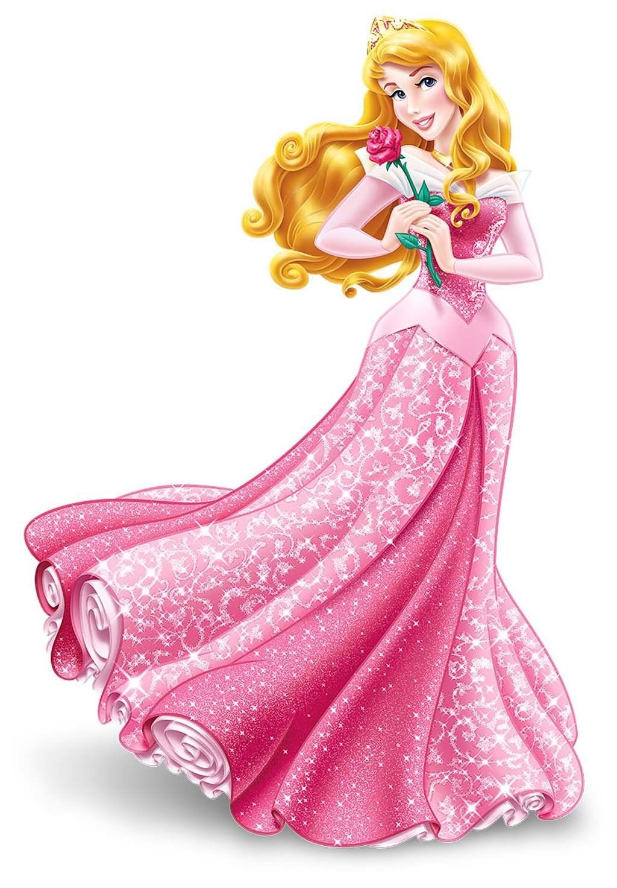
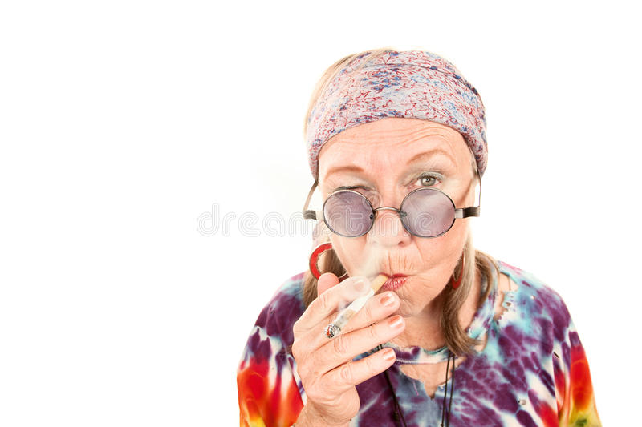
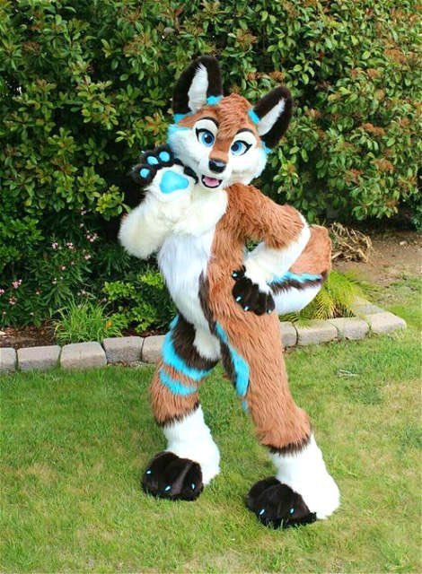
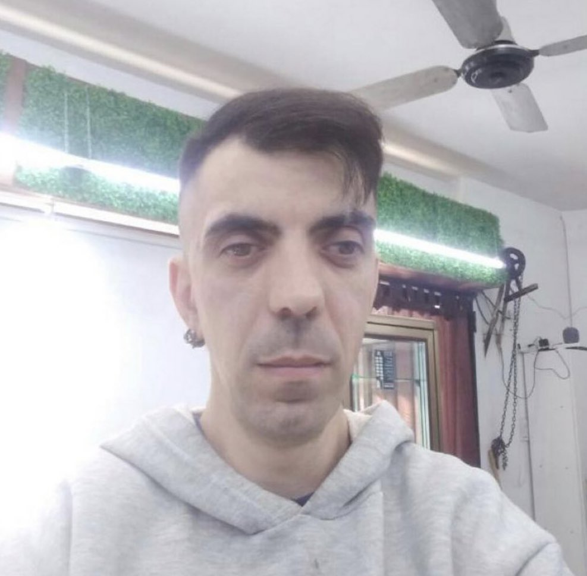

Ana Fernández Ostio
A continuación se muestra informacion de la persona:
- Nacido en: Hospital del Naranco, Oviedo en coordenadas, (43.369722, -5.872797, 120) el 2001-12-30
- Reside en: La Felguera, Langreo en coordenadas, (43.300599, -5.686115, 120)
- Comentario: Estudiante del grado de informatica del software
Imagenes de la persona
Andrea Romero Fernández
A continuación se muestra informacion de la persona:
- Nacido en: Hospital Valle del Nalón, Langreo en coordenadas, (43.327384, -5.721423, 120) el 2001-06-23
- Reside en: La Felguera, Langreo en coordenadas, (43.313460, -5.684037, 140)
- Comentario: Puede pasarse horas en tiktok
Imagenes de la persona
Sara Rodríguez Gonzalez
A continuación se muestra informacion de la persona:
- Nacido en: Hospital Valle del Nalón, Langreo en coordenadas, (43.327384, -5.721423, 120) el 2001-06-23
- Reside en: La Felguera, Langreo en coordenadas, (43.307858, -5.694365, 140)
- Comentario: Estudia fuera de Asturias
Imagenes de la persona

Sofía Nevado Domínguez
A continuación se muestra informacion de la persona:
- Nacido en: Hospital Universitario de Asturias, Oviedo en coordenadas, (43.374761, -5.828411, 120) el 2001-01-27
- Reside en: La Felguera, Langreo en coordenadas, (43.310724, -5.696117s, 140)
- Comentario: Toca el violin y el piano, además tambien canta
Imagenes de la persona

Carlos Aparicio Rodríguez
A continuación se muestra informacion de la persona:
- Nacido en: Hospital Cabueñes, Gijón en coordenadas, (43.525430, -5.606915, 120) el 2001-04-03
- Reside en: La Felguera, Langreo en coordenadas, (43.308383, -5.694912, 140)
- Comentario: No se le ve ni el pelo, está siemrpe en la montaña
Imagenes de la persona
Sonia Fernández Coto
A continuación se muestra informacion de la persona:
- Nacido en: Hospital del Naranco, Oviedo en coordenadas, (43.370522, -5.873290, 120) el 2001-07-18
- Reside en: Villoria, Laviana en coordenadas, (43.217147, -5.563205, 120)
- Comentario: Que guapa va esta chica siempre
Imagenes de la persona
Alicia Fernández Pushkina
A continuación se muestra informacion de la persona:
- Nacido en: Hospital Álvarez Buylla, Mieres en coordenadas, (43.226214, -5.780912, 120) el 2001-02-17
- Reside en: Mieres en coordenadas, (43.254424, -5.780472, 120)
- Comentario: Dibuja muy bien y además tiene unas mascotas muy monas
Imagenes de la persona

Miriam Gonzalez Alonso
A continuación se muestra informacion de la persona:
- Nacido en: Hospital del Naranco, Oviedo en coordenadas, (43.550294, -5.699638, 120) el 2001-05-23
- Reside en: Oviedo en coordenadas, (43.370756, -5.854382, 120)
- Comentario: En realidad es de laviana
Imagenes de la persona
Hector Lavandeira Fernández
A continuación se muestra informacion de la persona:
- Nacido en: Hospital del Naranco, Oviedo en coordenadas, (43.370522, -5.873290, 120) el 2001-12-25
- Reside en: Oviedo en coordenadas, (43.358549, -5.840642, 120)
- Comentario: capricornio de confianza
Imagenes de la persona
Sergio Murillo Álvarez
A continuación se muestra informacion de la persona:
- Nacido en: Hospital del Naranco, Oviedo en coordenadas, (43.368802, -5.872073, 120) el 2001-05-23
- Reside en: Laviana en coordenadas, (43.247722, -5.562731, 120)
- Comentario: Fan de hasbulla y de los Mercedes Benz
Imagenes de la persona
Sara Ferrero Lopez
A continuación se muestra informacion de la persona:
- Nacido en: Hospital del Naranco, Oviedo en coordenadas, (43.371403, -5.873267, 120) el 2001-07-18
- Reside en: La Felguera, Langreo en coordenadas, (43.30819278631577, -5.694307387923418, 120)
- Comentario: estudia en gijon pero le cuesta
Imagenes de la persona
Noemí Cuesta Murillo
A continuación se muestra informacion de la persona:
- Nacido en: Hospital Universitario de Asturias, Oviedo en coordenadas, (43.375899, -5.823658, 120) el 2001-07-06
- Reside en: La Felguera, Langreo en coordenadas, (43.309329, -5.695246, 120)
- Comentario: vive por y para la compe
Imagenes de la persona
Darío Martínez Bajo
A continuación se muestra informacion de la persona:
- Nacido en: Hospital Universitario de Asturias, Oviedo en coordenadas, (43.524259, -5.605899, 120) el 2001-04-11
- Reside en: Tuilla, Langreo en coordenadas, (43.328766, -5.643816, 120)
- Comentario: puede pasarse horas mirando en stockx
Imagenes de la persona
